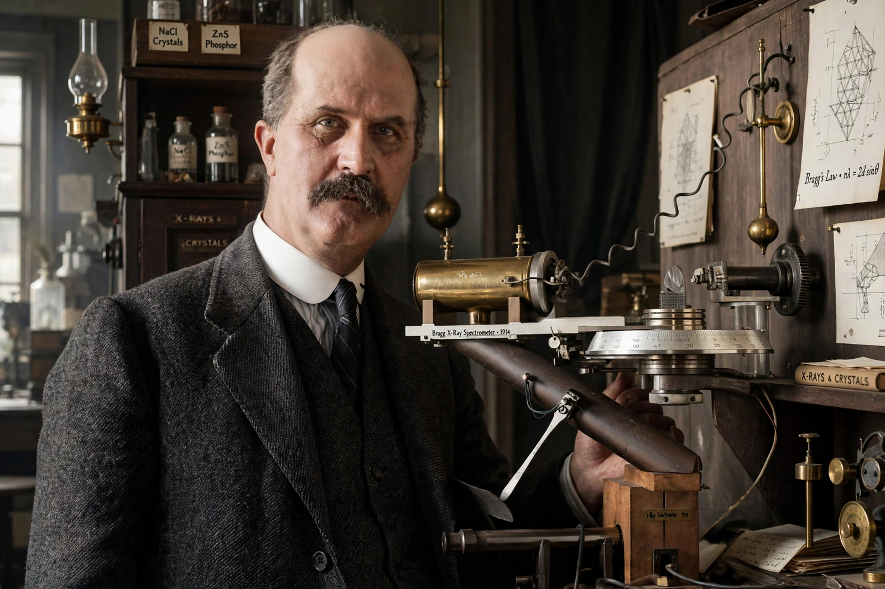

| Born | July 2, 1862 Wigton, Cumberland, England |
|---|---|
| Died | March 12, 1942 (aged 79) London, England |
| Alma mater | Trinity College, Cambridge |
| Known for | X-ray crystallography; Bragg's law |
| Awards | Nobel Prize in Physics (1915); Copley Medal (1930) |
| Fields | Physics |
| Institutions | University of Adelaide; University of Leeds; University College London; Royal Institution |
| Children | William Lawrence Bragg |
Sir William Henry Bragg (July 2, 1862 – March 12, 1942) was a British physicist and chemist who, with his son William Lawrence Bragg, shared the 1915 Nobel Prize in Physics for their work on analysing crystal structure by means of X-rays. They remain the only father-and-son pair to share a Nobel Prize, and Lawrence Bragg, at 25, is the youngest physics laureate.
Bragg studied mathematics at Trinity College, Cambridge, and in 1885 was appointed professor of mathematics and physics at the University of Adelaide, Australia, where he built up physics research and, after Röntgen's discovery, performed early X-ray experiments — including one of Australia's first X-rays. Returning to England in 1909 (Leeds, then University College London), he responded to Max von Laue's 1912 diffraction discovery by formulating Bragg's law, nλ = 2d sin θ, which treats diffraction as reflection from lattice planes.
He invented the X-ray spectrometer, enabling precise determination of wavelengths and crystal structures. During the First World War he worked on submarine detection by hydrophones. From 1923 he directed the Royal Institution, succeeding (in spirit) its tradition of public lectures, and served as president of the Royal Society from 1935 to 1940.
Categories: 1862 births | 1942 deaths | English physicists | Nobel laureates in Physics